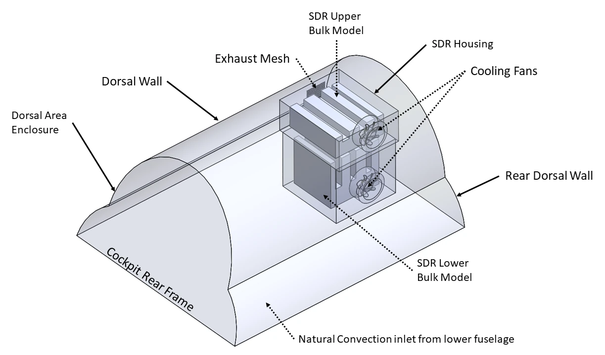
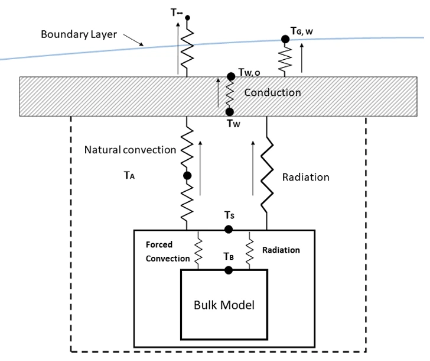
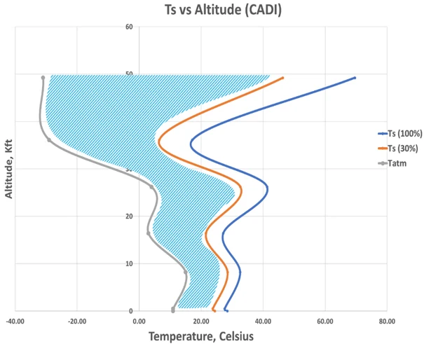
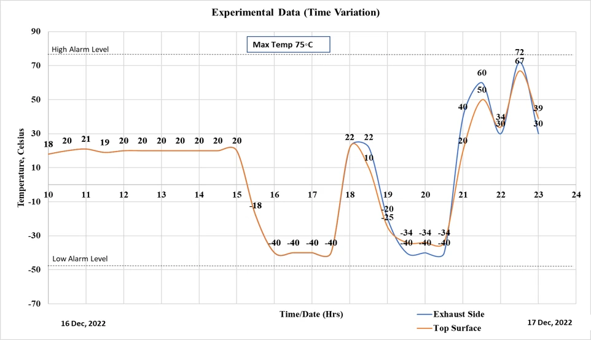
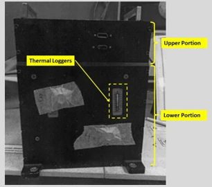

Avionics Thermal Qualification in an Unconditioned Dorsal Bay
Thermal qualification of high-flux electronics mounted in the unconditioned dorsal area of a high-performance airborne platform, resolved with a response-surface model validated against chamber testing.
 Enlarge ⤢
Enlarge ⤢The challenge
Electronics cooling inside unconditioned bays depends strongly on the heat-transfer characteristics of atmospheric air. As altitude increases, air density drops, which reduces convective heat-transfer capability, so electronics relying on natural or forced convection see higher component temperatures at altitude.
A cooling fan drives forced convection inside the casing, and heat then moves from the casing surface to the aircraft's outer skin by natural convection and radiation.

Enlarge ⤢
Enlarge ⤢CFD across the flight envelope
Thermofluid analysis was run at different altitudes, with ambient conditions defined by the International Standard Atmosphere (ISA) and by sponsor-specified design points, evaluating electronics temperature at 100% and 30% duty cycle. A hybrid mesh was used: structured mesh in the dorsal casing and electronics-casing domains, unstructured mesh in the cooling-fan zone.
At 100% duty cycle the casing surface temperature rose to 75°C, and to 45°C at 30% duty cycle; low- and high-velocity streamlines showed the natural- and forced-convection zones inside the casing respectively. Results were compared against MIL-E-5400 limits throughout.
 Enlarge ⤢
Enlarge ⤢ Enlarge ⤢
Enlarge ⤢
Enlarge ⤢Response surface and chamber testing
CFD results across the sampled altitudes were used to generate a response surface via Genetic Aggregation methodology, approximating the electronics-casing results for the complete flight envelope without re-running CFD at every point.
In parallel, the electronics system was thermally tested in an Environmental Stress Screening (ESS) chamber at conditions replicating the actual ambient characteristics at variable flight altitude. The CFD and response-surface predictions showed good conformance with the chamber results, within 5% error, confirming the electronics system compliant with airworthiness standards.

Enlarge ⤢
Enlarge ⤢A validated response-surface thermal model of the dorsal bay, agreeing with environmental-chamber testing within 5% error and confirming compliance with MIL-E-5400 across the full flight envelope.
Sponsored by SPRC, Government of Pakistan